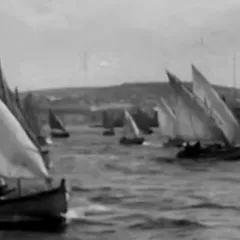
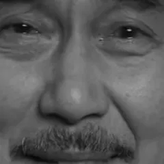
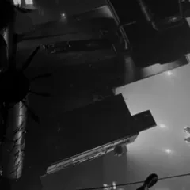

Découpage and blocking are done — today's about putting the pre-workshop video's fundamentals into practice as you get out and shoot your scene, grouped by setup.



Camera, actor, and light in the world — putting last week's plan into practice